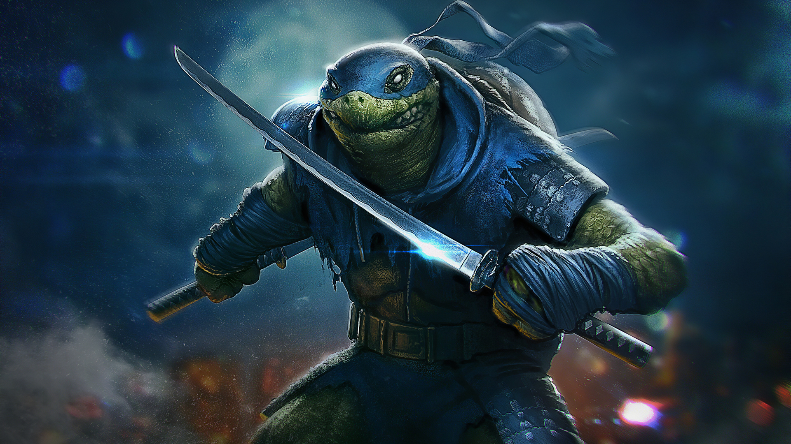

Leonardo, nicknamed Leo, is a fictional superhero and one of the four main characters in the Teenage Mutant Ninja Turtles comics and related media. He is often depicted wearing a blue bandanna. His signature weapons are two Ninjatos, commonly confused as Katanas. Leonardo is the eldest brother and the leader of the group. He is the most skilled, the most serious, the most spiritual, the most disciplined and the most in-line with Splinter's teachings and thoughts.